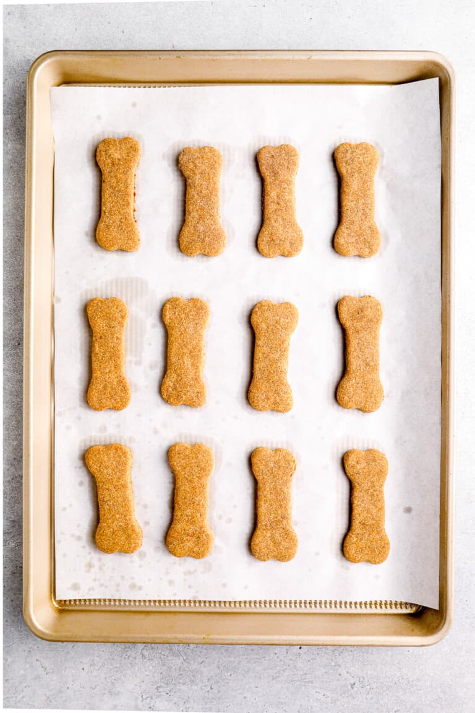

Borkin' Good Peanut Butter Biscuits

These peanut butter treats are fit for the bestest of bois!
Show your pup how much you love them by baking up some fresh homemade peanut butter dog treats!
This Homemade Dog Treats Recipe is so easy to make, and your pup will absolutely love them. Show some love with these tasty Peanut Butter Dog Treats!
Ingredients
For the Treats:
- 2 1/2 cups whole wheat flour
- 1 large egg
- 1 cup peanut butter
- 1 cup water
- 2 tablespoons honey
For the Frosting:
- 2 tablespoons peanut butter
- 1 tablespoon honey
- 1/3 cup cornstarch
- 3-4 tablespoons hot water
Steps:
- Preheat oven to 350°F. Line a baking sheet with parchment paper. Set aside.
- In a large bowl, combine flour and the egg. Add the peanut butter, water, and honey, and stir until you have a stiff dough. The dough becomes very firm and sticky. You may need to use your hands, or the paddle attachment on your mixer.
- On a lightly floured surface, roll out the dough about ½-inch thick and use a cookie cutter to make fun shapes. The treats barely spread and rise, so get creative with your shapes.
- Bake for 18-20 minutes, until golden. Once done, set aside to cool. (If you have smaller cookies, use less time, otherwise the bottom might burn.)
- To make the frosting, combine the peanut butter and honey in a microwavable bowl, and heat in the microwave in 15 second increments, stirring in between, until melted.
- Add the melted peanut butter mixture to the cornstarch and stir until just combined.
- Slowly add in the water 1 tablespoon at a time until you have reached the consistency that you would like. For a thinner frosting, add more water.
- Add the frosting to a piping bag and pipe designs on top of each dog treat.
- Frost the treats with the peanut butter/honey mixture for an even more tempting cookie.
HOME